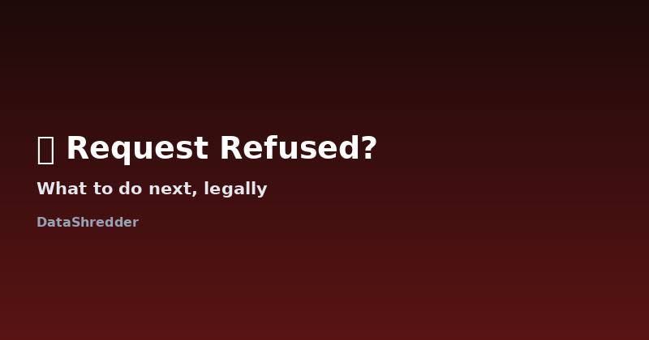

What to Do When a Company Refuses Your Data Deletion Request
Updated August 2026 · 11 min read

When a refusal is actually valid
Not every "no" is a violation. Companies can lawfully refuse or limit an erasure request when the data is needed for a legal obligation (tax and accounting records, for example), to defend a legal claim, or when it falls under a narrow public-interest exception like scientific research or freedom of expression. A retailer keeping your purchase history for warranty and tax purposes, or a bank retaining transaction records for the legally required period, is not breaking the law — even though it feels like a refusal.
Common excuses, and whether they hold up
| What they say | Valid? | Why |
|---|---|---|
| "Required to keep it for accounting purposes" | Usually yes | Tax law genuinely requires retention for a set period |
| "Our policy doesn't allow deletion" | No | An internal policy is not a legal exception under GDPR or CCPA |
| "Needed for an active legal claim" | Depends | Valid only if there's an actual, specific ongoing dispute — not a hypothetical one |
| "Data is anonymized, so it doesn't apply" | Depends | Only valid if truly anonymized, not just pseudonymized (which is still personal data under GDPR) |
| No response at all | Never valid | Silence past the legal deadline is itself a violation |
When it isn't — and what to say
The refusal becomes a real problem when the company gives a vague excuse, simply doesn't respond, or refuses to explain which specific legal exception applies. Under GDPR, a company that denies your request must tell you why, in writing, within one month. If they can't point to a specific legal basis, that's not a valid refusal — it's non-compliance. Reply in writing, reference their own obligation to justify the refusal, and give them a firm second deadline (7–14 days is reasonable) before you escalate.
Language to use in your follow-up
You don't need a lawyer to write an effective follow-up. A short, factual message works better than a long, frustrated one:
"Your response did not specify the legal basis under [GDPR Article 17(3) / CCPA] for retaining my data. Please confirm the exact exception that applies, or complete the deletion within 7 days. If I do not receive a specific legal basis, I will file a complaint with [your Data Protection Authority]."
Naming the specific law and the next step you'll take is what separates a follow-up that gets a real answer from one that gets ignored a second time.
How to escalate step by step
- Reply in writing, once. Ask them to cite the specific legal exception that applies to your case. Keep it short and factual.
- Wait for their second response. If they still can't justify it, or stay silent, move to the next step — don't send a third email hoping for a different outcome.
- File a complaint with your data protection authority. In the EU, find yours through the EDPB member directory. In California, complaints go to the California Attorney General's office. Our complaint filing guide walks through exactly what to include.
- Keep your paper trail. Regulators ask for the original request and every reply — save dates, not just the final email.
A realistic timeline
Regulators are not fast. A formal complaint can take weeks to be acknowledged and months to resolve, especially for smaller cases that aren't part of a broader pattern. That's normal, and it's still worth filing — a documented complaint is what turns an individual refusal into regulatory pressure, even if your specific case takes time to close. Larger, well-known companies are more likely to move quickly once a regulator contacts them directly, simply because they have compliance teams monitoring for exactly this kind of escalation.
Why your paper trail matters more than you think
The single biggest factor in how quickly a complaint resolves is how well-documented your timeline is when you file it. A complaint that includes the original request date, every reply with its date, and a clear statement of what deadline was missed gets processed faster than one that summarizes the situation in a paragraph. Keep a simple text file or spreadsheet: company name, request date, legal deadline, response received (yes/no), and outcome. It takes two minutes per company and saves significant back-and-forth if a regulator asks for clarification later.
Common stalling tactics, and how to respond to each
A few patterns show up repeatedly when companies want to avoid processing a request without technically refusing it outright. Recognizing them saves you from wasting weeks going back and forth.
| Tactic | What it looks like | How to respond |
|---|---|---|
| Identity verification loop | Repeatedly asking for "more" verification after you've already provided reasonable proof | Ask them in writing to specify exactly what additional document would satisfy the request, once |
| Redirecting to account settings | Telling you to "just delete it yourself" in settings that don't actually offer full erasure | Point out specifically what the settings page does and doesn't remove, and restate the formal request |
| Silent non-response | No reply at all after the legal deadline passes | Send one dated follow-up citing the missed deadline, then escalate if it's ignored again |
| Partial deletion presented as complete | Confirming "deletion" while marketing or analytics data clearly remains | Ask for written confirmation of which specific categories were deleted versus retained, and why |
Building a record that actually helps a regulator
Regulators move faster on complaints that arrive pre-organized. Keep a simple running document — not a folder of scattered emails — with three columns: date, what was sent or received, and what deadline (if any) applies. When you eventually file a complaint, being able to hand over a two-line summary of "requested on X, no response by Y, followed up on Z, still no valid answer" is far more useful to a caseworker than forwarding an entire email thread and asking them to piece it together themselves.
Frequently Asked Questions
Is it worth filing a complaint for one refused request?
Yes. Regulators use the volume and pattern of individual complaints to decide which companies to investigate — a single complaint matters even if it isn't resolved quickly.
Can a company charge me a fee to process my deletion request?
Generally no, unless your request is manifestly unfounded or excessive (for example, repeated identical requests), in which case a reasonable fee may be allowed.
What if the company says it can't find my data?
Ask them to confirm this in writing with the specific systems they searched. A vague denial without any search description is not sufficient documentation.
How many follow-ups should I send before escalating?
One clear, specific follow-up is enough. Sending three or four increasingly frustrated emails rarely changes the outcome and just delays the point where a regulator gets involved.
Can a company ask me to prove my identity before deleting my data?
Yes, this is a legitimate step to prevent someone else from deleting your account — but it should be proportionate. If they keep asking for more after you've provided a reasonable proof, that's a stalling pattern worth pushing back on.
What counts as a 'reasonable' second deadline before I escalate?
7 to 14 days after your follow-up is standard practice — enough time for a legitimate response, short enough that it doesn't let the issue drag on indefinitely.